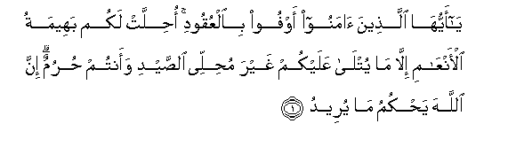
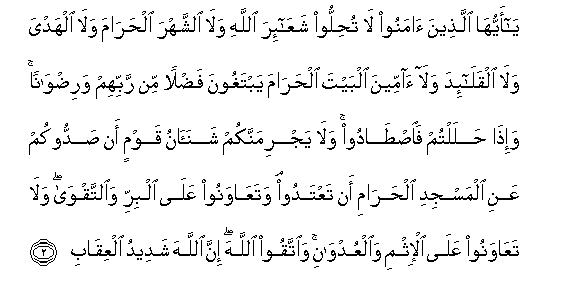
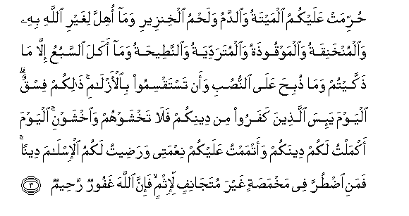
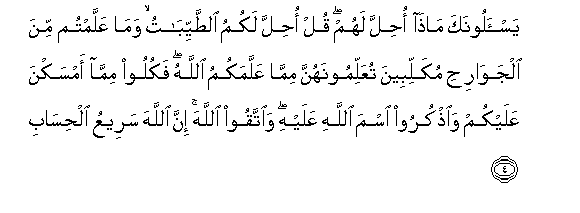
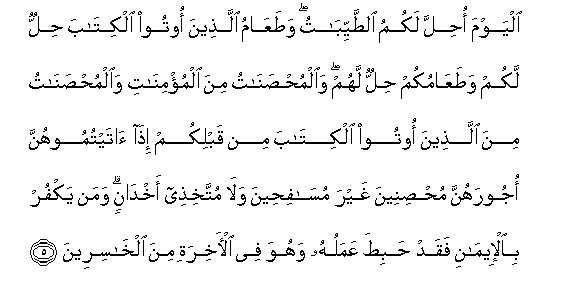

Sacred Texts Islam Index
Hypertext Qur'an Unicode Palmer Pickthall Yusuf Ali English Rodwell
Sūra V.: Māïda, or The Table Spread. Index
Previous Next

The Holy Quran, tr. by Yusuf Ali, [1934], at sacred-texts.com
Sūra V.: Māïda, or The Table Spread.
Section 1

1. Ya ayyuha allatheena amanoo awfoo bialAAuqoodi ohillat lakum baheematu al-anAAami illa ma yutla AAalaykum ghayra muhillee alssaydi waantum hurumun inna Allaha yahkumu ma yureedu
1. 1 O ye who believe!
Fulfil (all) obligations
2 Lawful unto you (for food)
Are all four-footed animals,
With the exceptions named:
But animals of the chase
Are forbidden while ye
Are in the Sacred Precincts
Or in pilgrim garb:
For God doth command
According to His Will and Plan

2. Ya ayyuha allatheena amanoo la tuhilloo shaAAa-ira Allahi wala alshshahra alharama wala alhadya wala alqala-ida wala ammeena albayta alharama yabtaghoona fadlan min rabbihim waridwanan wa-itha halaltum faistadoo wala yajrimannakum shanaanu qawmin an saddookum AAani almasjidi alharami an taAAtadoo wataAAawanoo AAala albirri waalttaqwa wala taAAawanoo AAala al-ithmi waalAAudwani waittaqoo Allaha inna Allaha shadeedu alAAiqabi
2. 3 O ye who believe!
Violate not the sanctity
Of the Symbols of God,
Nor of the Sacred Month,
Nor of the animals brought
For sacrifice, nor the garlands
That mark out such animals,
Nor the people resorting
To the Sacred House,
Seeking of the bounty
And good pleasure
Of their Lord.
But when ye are clear
Of the Sacred Precincts
And of pilgrim garb,
Ye may hunt
And let not the hatred
Of some people
In (once) shutting you out
Of the Sacred Mosque
Lead you to transgression
(And hostility on your part).
Help ye one another
In righteousness and piety,
But help ye not one another
In sin and rancour:
Fear God: for God
Is strict in punishment.

3. Hurrimat AAalaykumu almaytatu waalddamu walahmu alkhinzeeri wama ohilla lighayri Allahi bihi waalmunkhaniqatu waalmawqoothatu waalmutaraddiyatu waalnnateehatu wama akala alssabuAAu illa ma thakkaytum wama thubiha AAala alnnusubi waan tastaqsimoo bial-azlami thalikum fisqun alyawma ya-isa allatheena kafaroo min deenikum fala takhshawhum waikhshawni alyawma akmaltu lakum deenakum waatmamtu AAalaykum niAAmatee waradeetu lakumu al-islama deenan famani idturra fee makhmasatin ghayra mutajanifin li-ithmin fa-inna Allaha ghafoorun raheemun
3. 4 Forbidden to you (for food)
Are: dead meat, blood,
The flesh of swine, and that
On which hath been invoked
The name of other than God;
That which hath been
Killed by strangling,
Or by a violent blow,
Or by a headlong fall,
Or by being gored to death;
That which hath been (partly)
Eaten by a wild animal;
Unless ye are able
To slaughter it (in due form);
That which is sacrificed
On stone (altars);
(Forbidden) also is the division
(Of meat) by raffling
With arrows: that is impiety.
This day have those who
Reject Faith given up
All hope of your religion:
Yet fear them not
But fear Me.
This day have I
Perfected your religion
For you, completed
My favour upon you,
And have chosen for you
Islam as your religion.
But if any is forced
By hunger, with no inclination
To transgression, God is
Indeed Oft-forgiving,
Most Merciful.

4. Yas-aloonaka matha ohilla lahum qul ohilla lakumu alttayyibatu wama AAallamtum mina aljawarihi mukallibeena tuAAallimoonahunna mimma AAallamakumu Allahu fakuloo mimma amsakna AAalaykum waothkuroo isma Allahi AAalayhi waittaqoo Allaha inna Allaha sareeAAu alhisabi
4. 5 They ask thee what is
Lawful to them (as food)
Say: Lawful unto you
Are (all) things good and pure:
And what ye have taught
Your trained hunting animals
(To catch) in the manner
Directed to you by God:
Eat what they catch for you,
But pronounce the name
Of God over it: and fear
God; for God is swift
In taking account.

5. Alyawma ohilla lakumu alttayyibatu wataAAamu allatheena ootoo alkitaba hillun lakum wataAAamukum hillun lahum waalmuhsanatu mina almu/minati waalmuhsanatu mina allatheena ootoo alkitaba min qablikum itha ataytumoohunna ojoorahunna muhsineena ghayra musafiheena wala muttakhithee akhdanin waman yakfur bial-eemani faqad habita AAamaluhu wahuwa fee al-akhirati mina alkhasireena
5. 6 This day are (all) things
Good and pure made lawful
Unto you. The food
Of the People of the Book
Is lawful unto you
And yours is lawful
Unto them.
(Lawful unto you in marriage)
Are (not only) chaste women
Who are believers, but
Chaste women among
The People of the Book,
Revealed before your time,—
When ye give them
Their due dowers, and desire
Chastity, not lewdness,
Nor secret intrigues.
If any one rejects faith,
Fruitless is his work,
And in the Hereafter
He will be in the ranks
Of those who have lost
(All spiritual good).